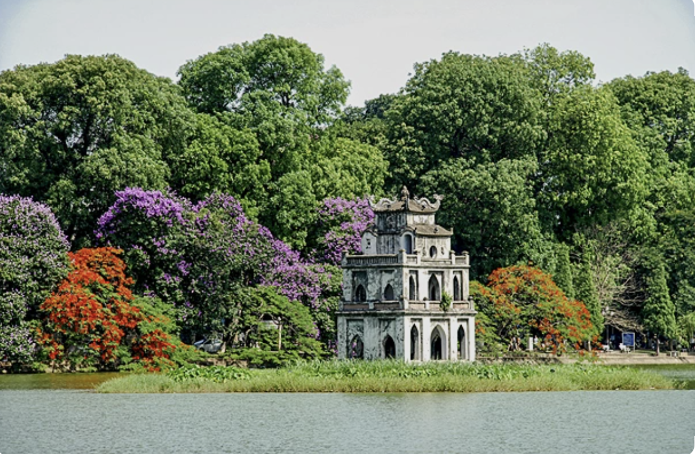
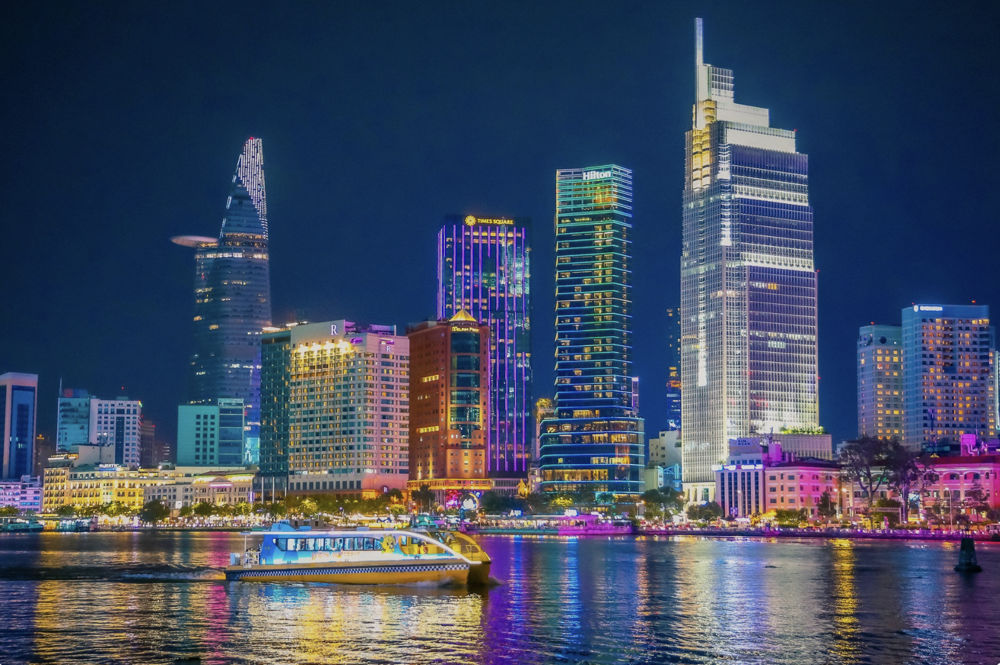
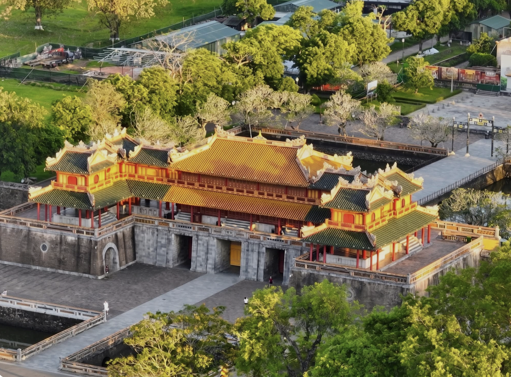
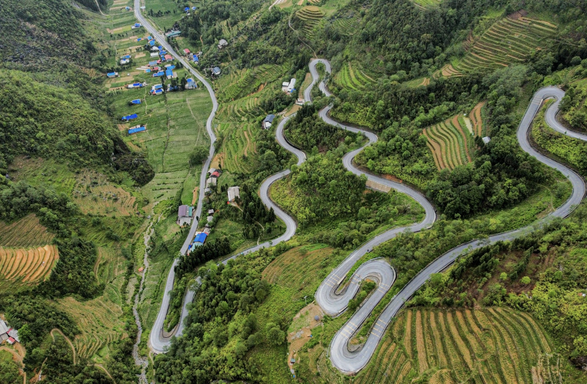
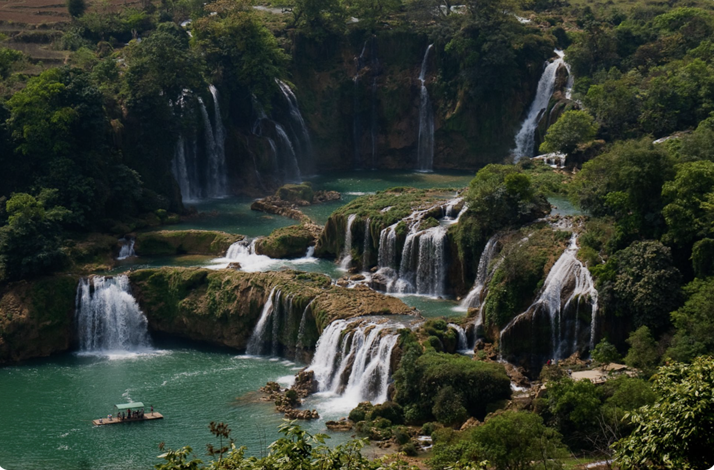
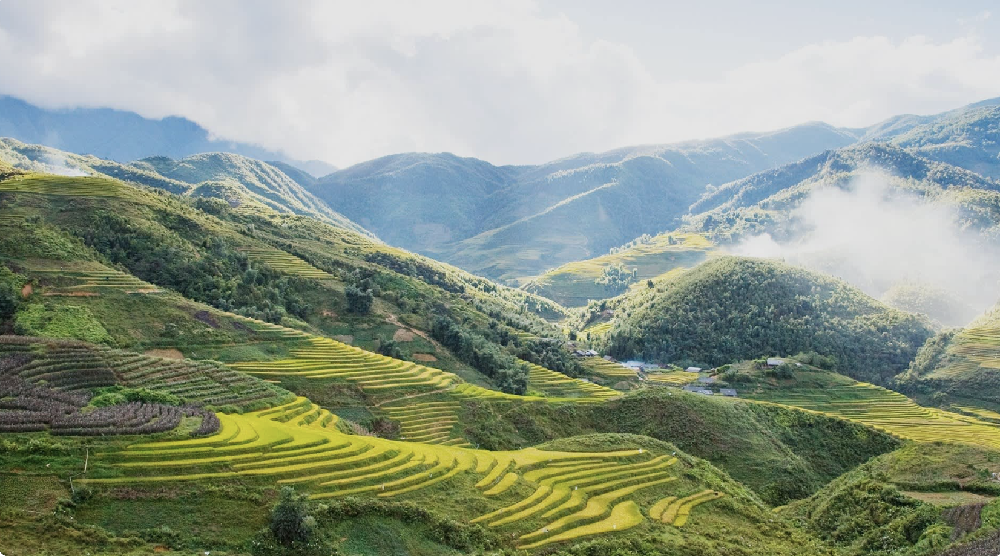

Ha Giang
Ha Giang is famous for its impressive mountains, winding roads, and beautiful local villages.
Traveling gives me an opportunity to discover new cultures, landscapes, and experiences. Here are some places that I find especially interesting.

Ha Giang is famous for its impressive mountains, winding roads, and beautiful local villages.

Da Nang is a modern coastal city with beautiful beaches and interesting attractions.

Hoi An is well known for its old architecture, colorful streets, and peaceful atmosphere.

Da Lat has a cool climate, beautiful scenery, and many interesting places to explore.

Ha Noi combines traditional culture, historic places, local food, and modern city life.

Exploring new destinations allows me to experience different landscapes and cultures.